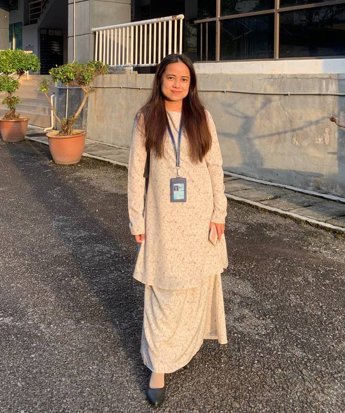
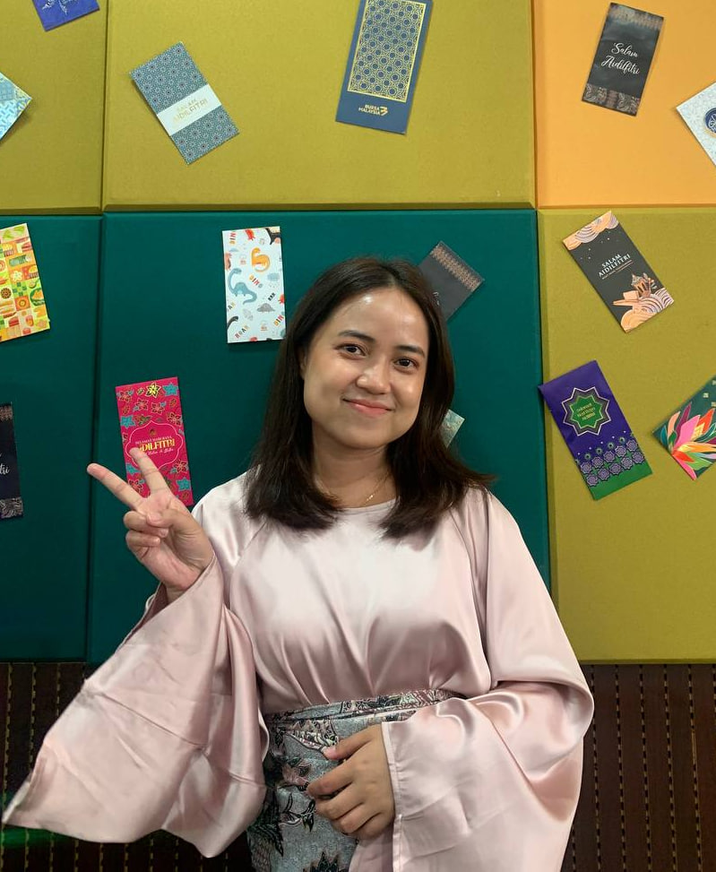

ABOUT ME
📥roslinniyak@gmail.com |📲 010-8977640
Image Grid



Name : Roslin Niyak Anak Alih
Age : 25 years old
Date of Birth : 14 July 1999
Place of Birth : Hospital Bintulu
Gender : Female
Religion : Christian
Race : Iban
Status : Single
Nationality : Malaysia
Address : Q-1-13 Sungai Plan, Jalan Tanjung Batu, 97000 Bintulu, Sarawak.